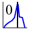
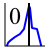

Subsections
4. Advanced Usage
When the event mode is selected for file import additional options for the desired binning are shown. You can define the number of Bins, the bin steps (constant ToF or Q steps) and split datasets in time.
You can read all datasets and options from an already exported reflectivity using the File->Load Extraction... menu and select a ASCII file.
Afterwards the options in the reduction table can be changed as desired.
If the the direct beam position was not saved correctly during instrument alignment all calculated  -values for the reflectivity will be wrong.
To correct this there are two parameters to overwrite it in the Reflectivity Extraction (Advanced) area, Direct Pixel and Dangle0.
These parameters are ignored if they have the values -1 and None.
To overwrite the correct values you can open a direct beam dataset and activate the Adjust Direct Beam  to save the current DANGLE as Dangle0 and the fitted x-position as Direct Pixel.
-values for the reflectivity will be wrong.
To correct this there are two parameters to overwrite it in the Reflectivity Extraction (Advanced) area, Direct Pixel and Dangle0.
These parameters are ignored if they have the values -1 and None.
To overwrite the correct values you can open a direct beam dataset and activate the Adjust Direct Beam  to save the current DANGLE as Dangle0 and the fitted x-position as Direct Pixel.
r0.3

Some samples have a weavy or bent surface and reflect the neutron beam into different angles.
Treating these as one reflection will destroy the resolution of you measurement or needs to be restricted to a small X-region, which reduces the statistics.
For these cases the Reflectivity Extraction (Advanced) area has a "Fan"-Reflectivity option, which treats each pixel on the detector separately to calculate I() and combines these reflectivity afterwards to get better statistics.
In this case you can widen the red area on the X-projection plot to take into account your full reflectivity.
The underlying algorithm reduces the total width of a selected dataset in so it can be possible that for lower angles you do not get overlapping areas to stitch the data together.
In this case you should select a smaller area for the lower angle measurements and/or extract two regions in X for one dataset.
Off-specular scattering can easily be extracted when the specular reflectivity is already defined in the reduction table. You can take a look at the OffSpec Preview tab to take a look in advance (does not show the active dataset, only the reduction table entries).
The reduction dialog as a separate option to export the off-specular data, where Raw refers to the data as extractec, Corrected applies an algorithm to reduce detector artifacts from high intensity areas and Smoothed will interpolate the data to a regular grid with -dependent Gaussian smoothing (parameters are defined in a separate dialog when exporting).
For GISANS measurements another dialog appears when exporting, where you can define the wavelength bands, which will be combined in one image.